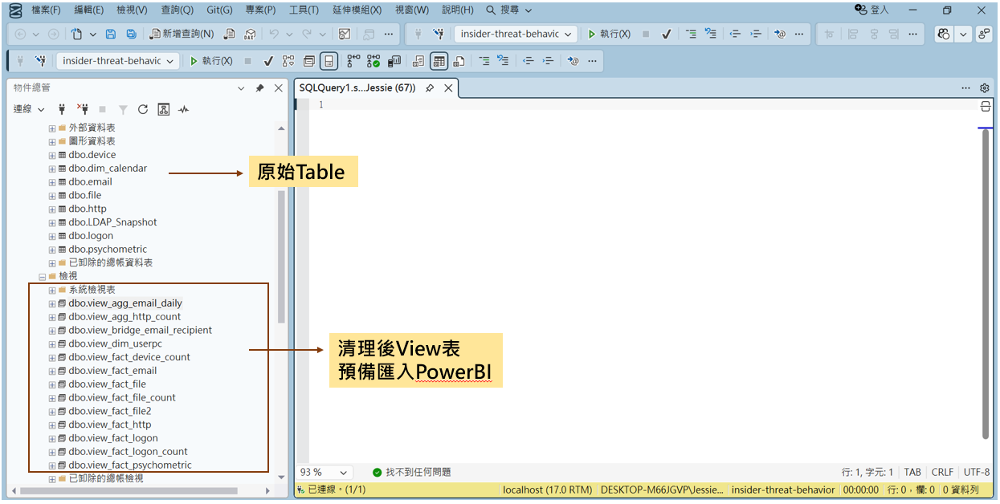
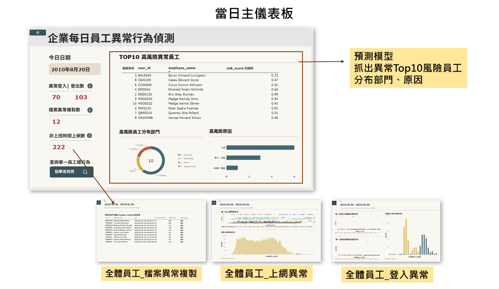

內部異常行為偵測
× 機器學習事前預警
用 SQL＋Power BI 建立每位員工的行為基準線，再用機器學習在犯案前把高風險員工排進每日 Top 10，最後整合成一個主管每天早上打開就能用的儀表板。
只用行為特徵 × Random Forest 就夠了：45 名內鬼全數進入每日 Top 10，38 人在第一次犯案之前就被列出，中位數提早 5 天；加入人格與組織資訊沒有更早。
只看行為異常，永遠慢一步
內部人員擁有合法權限，傳統資安設備認不出來；等異常真的出現，事情往往已經發生了。
看見異常：每人行為基準線
用登入、USB、上網、Email、檔案 log，把每個人「今天」和「自己過去」比，做成可鑽研的儀表板。
事前預警：比「提早幾天」
用機器學習每天排出風險 Top 10，評估標準不是準確率，而是比第一次犯案早幾天。
兩條管線，匯流到同一個儀表板
SQL／Power BI 負責「看見異常」，Python／ML 負責「排出風險順序」；模型分數與原因寫回 Power BI，主管只需要看一個畫面。
一條流程看完：每一步用了什麼、為什麼
核心概念只有一個：不跟別人比，跟自己過去比。儀表板用它來標出異常，模型用它當最重要的特徵。
清理成事實表／維度表
5 類行為 View；比對每月 LDAP，員工消失＝預計離職
原始 log 14 GB，先在資料庫收斂每人行為基準線
星狀模型；量值＝當日 vs 自己歷史平均
業務不同，跟自己比才公平人 × 天 特徵
66 個特徵：今日行為、自身偏離、組織、人格
週／月彙總會把異常平均掉逐月滾動訓練
每月只用過去資料訓練，考下個月
模擬真的上線，不偷看未來比「提早幾天」
每天只查 Top 10，在此限制下比天數
全判正常準確率就有 99.3%分數＋原因寫回儀表板
每人前三大風險原因
分數要能解釋，主管才敢用「人 × 天」＋跟自己過去比，能在犯案前預警
加入人格＋組織變動，能比只用行為更早
換不同模型、或改變「犯案前幾天算高風險」，預警效果會不同
完整實驗數據與過程36 組實驗、5 張比較表、資料處理畫面
提早天數 ＝ 第一次犯案日 − 第一次進入 Top 10
- 逐月滾動：模型沒看過要考的月份
- 不洩漏：拿掉「距離職天數」（要知道未來）
- 不造假：用 class weight，不用 SMOTE
- 檢定：Wilcoxon、McNemar，p < 0.05
提早天數（中位數）RF × 犯案前 14 天標為高風險
表 1 特徵組比較RF；p 為與 G1 比
| 特徵組 | 抓到 | 犯案前 | P@10 | p（14 天） | p（30 天） |
|---|---|---|---|---|---|
| G1 只用行為 | 45 | 38 | 0.453 | — | — |
| G2 ＋人格 | 45 | 36 | 0.426 | 0.158 | 0.151 |
| G3 ＋組織 | 45 | 36 | 0.427 | 0.247 | 0.212 |
| G4 全部 | 45 | 35 | 0.421 | 0.050 | 0.102 |
表 2 模型比較G1 × 犯案前 14 天
| 模型 | 抓到 | 提早 | P@10 | p（抓到） |
|---|---|---|---|---|
| Random Forest | 45 | 5 天 | 0.453 | — |
| XGBoost | 45 | 4 天 | 0.402 | — |
| Logistic Reg. | 28 | 2.5 天 | 0.174 | < 0.001 |
RF vs XGBoost 提早天數 p＝0.383，無顯著差異
表 3 犯案前幾天標為高風險G1 × RF
| 標記期間 | 抓到 | 提早 | 犯案前 | P@10 |
|---|---|---|---|---|
| 犯案前 7 天 | 45 | 4 天 | 38 | 0.419 |
| 犯案前 14 天 | 45 | 5 天 | 38 | 0.453 |
| 犯案前 30 天 | 45 | 6 天 | 38 | 0.457 |
兩兩比較 p ≥ 0.18，選哪個都可以
表 4 分類指標G1 × 犯案前 14 天
| 模型 | Accuracy | Precision | Recall | PR-AUC |
|---|---|---|---|---|
| Random Forest | 98.2% | 0.182 | 0.391 | 0.391 |
| XGBoost | 98.2% | 0.173 | 0.371 | 0.363 |
| Logistic Reg. | 97.8% | 0.041 | 0.089 | 0.079 |
| 全判正常 | 99.3% | 0 | 0 | — |
| 隨機亂猜 | — | — | — | 0.007 |
全判正常準確率最高 → 不看 Accuracy；RF 排序能力是亂猜的 53 倍
表 5 人格洗牌測試G4 × XGBoost × 犯案前 14 天
| 人格 | 抓到 | 提早 | 犯案前 | p |
|---|---|---|---|---|
| 真實 | 45 | 2 天 | 33 | — |
| 打亂 | 45 | 1 天 | 27 | 0.077 |
打亂後變差但不顯著：人格有訊號，但和行為重疊

Demo：主管每天早上打開的那一頁
兩位真實內鬼，從警報一路查到證據。點右側章節可以直接跳到該段，影片下方會同步說明「現在在看什麼」。
- 8/2開始犯案：上班時間瀏覽求職網站（job-hunt、monster、LinkedIn），並寫信給競爭對手
- 8/2當天就被列為 Top 10 第 1 名（風險 0.98），原因：瀏覽網頁數比自己過去 30 天高
- 8/31 起用 USB 大量帶走資料，9/28 離職
→ 比他開始用 USB 偷資料早了 4 週，期間幾乎天天在名單上
▶ 跳到 0:09 看這一段- 8/9進入 Top 10，原因：下班後插 USB 2 次，比自己過去高
- 8/11第一次犯案：凌晨 4 點登入（影片 1:36 登入頁可見）、插 USB、把資料上傳到 wikileaks
- 8/12深夜再做一次，之後離職（儀表板狀態顯示「30 天內離職」）
→ 比第一次犯案早 2 天發出警報
▶ 跳到 1:06 看這一段
輸出的是「關注順序」，不是「有罪判定」
越簡單越好：只用行為特徵 × Random Forest
45 名內鬼全數預警、38 人在犯案前，中位數提早 5 天。人格資訊和行為重疊，加入後只增加複雜度。
讓主管知道今天先關心誰
風險分數只決定關注順序（主管關心、確認業務需求、檢視離職者權限），不作為懲處依據。CERT 的惡意行為多從工作滿意度下降開始，提早關心就可能從根本避免事件。
限制：r4.2 是模擬資料，「人格 → 行為 → 惡意」的關聯是設計出來的；本專題驗證的是做法能讓警報提早，不宣稱人格能預測犯罪。評估只有 45 人，小差異不容易達到顯著。
- 讀昨天的新紀錄
- 算特徵（跟自己過去 30 天比）
- 載入模型打分 → 排 Top 10
- SHAP 算風險原因
- 寫入 CSV／資料庫
本專題現況 vs 上線所需還差哪些環節
| 環節 | 上線工具 | 本專題現況 |
|---|---|---|
| 每天自動執行 | Windows 工作排程器／伺服器排程 | 手動執行 run_*.bat |
| 保存模型 | joblib 存 .pkl，每天載入 | 每次重新訓練 |
| 每日打分 | 只處理「新的一天」 | 一次算完整段期間 |
| 交接資料 | CSV、SQL Server、雲端資料庫 | ✓ CSV |
| Power BI 更新 | Power BI Service 排程（需閘道） | 手動重新整理 |
不讓 Power BI 直接跑模型：重新整理慢、雲端支援有限、難除錯。
降低誤報：ITAdmin 只佔員工 3.5%，卻佔 Top 10 的 36.8%（常態插 USB）→ 下一步加入「跟同職務比」的偏離量，並要求連續 2 天進榜才發警報。
跨產業複用
「由大到小」鑽研＋跟自己過去比，套用到製造業、流程異常排查
提早預警
歷史資料建模，提早鎖定高風險族群（離職、流失、詐欺）
AI 查詢 log
「誰在異常時段大量查詢內部 AI」與 CERT 是同一類問題
資料清理 SQL、ML 腳本（00～06）、方法紀錄與 Power BI 說明都在 repo 裡。